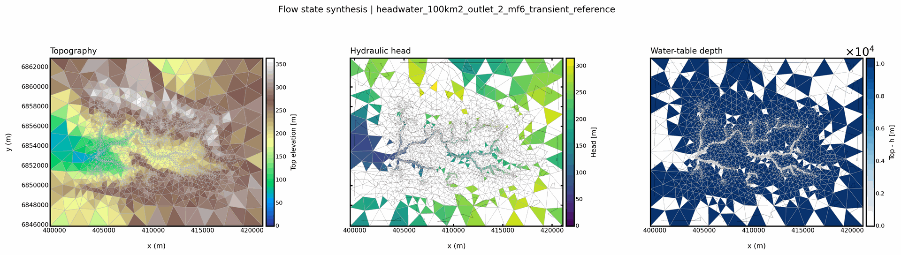
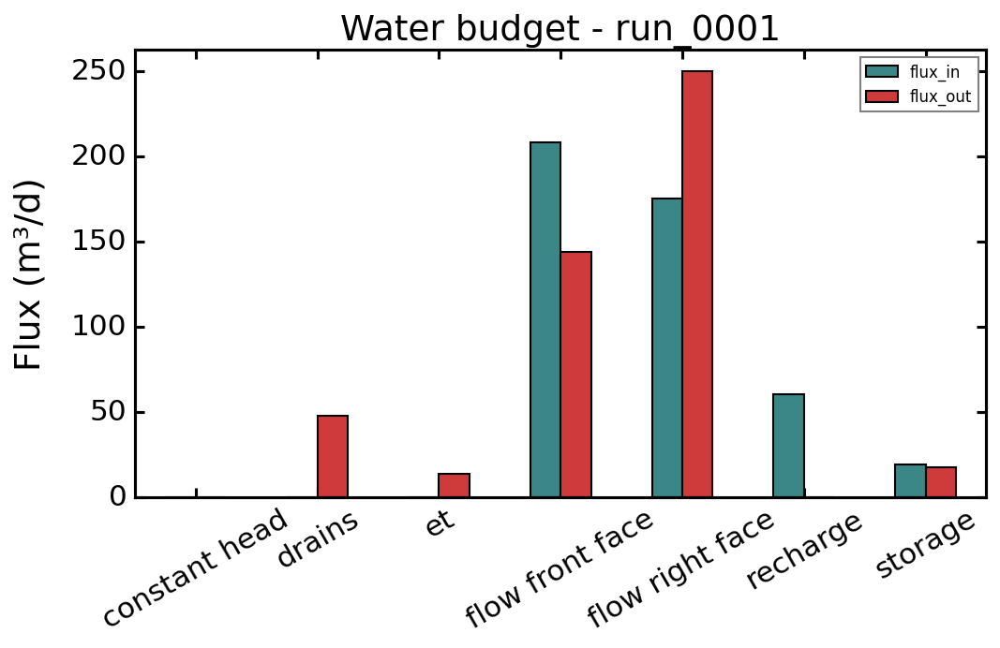
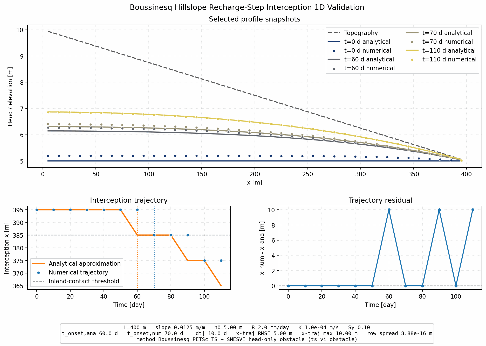

Solver Capability Matrix#
Purpose#
This page is meant to become the compact comparison sheet that answers:
“Which backend should I use for which kind of HydroModPy problem, and how well is that path currently documented and validated?”
The first selection axis is now the process type. Backend-family comparisons
remain useful, but they should not hide the distinction between flow,
transport, postprocess, and display.
Axis-level capability snapshot#
Compact matrix scanned in seconds. yes means a public path exists,
partial means the code surface exists but the docs or validation
coverage is still incomplete, no means the feature is not exposed.
Backend |
Steady |
Transient |
Unstructured mesh |
Transport |
Calibration |
1D |
2D |
3D |
|---|---|---|---|---|---|---|---|---|
|
yes |
yes |
no |
via MT3DMS |
yes |
yes |
yes |
yes |
|
yes |
yes |
yes (DISV) |
yes (GWT) |
yes |
yes |
yes |
yes |
|
yes |
yes |
yes (triangular) |
no |
partial |
yes |
yes |
no |
|
yes |
yes |
n/a (lumped) |
no |
yes |
n/a |
n/a |
n/a |
The columns above are the recommended decision axes when scoping a new study. For richer context, read each backend row in Process-Level Matrix below.
Visual Anchors#
The matrix below is easier to read if each solver family is connected to a real result artifact. These figures are representative anchors, not exhaustive capability claims.



Process-Level Matrix#
Backend |
Mesh support |
Regimes |
Main scientific role |
Validation anchor |
Current main limits |
|---|---|---|---|---|---|
|
Structured |
Steady and transient |
Legacy MODFLOW-family flow path, still important for comparison, MODPATH, and MT3DMS workflows |
|
No runtime Gmsh mesh path, scientific method note still missing, sunset strategy not yet fully reflected in user-facing docs |
|
Structured plus runtime DISV-style unstructured meshes |
Steady and transient |
Modern MODFLOW-family backend for flow, with irregular-mesh support and growing method-choice documentation |
XT3D method-choice assets plus MODFLOW 6 Architecture |
Scientific note still incomplete on package choices, vertical assumptions, and when to prefer it over NWT |
|
Triangular runtime meshes |
Steady and transient |
In-house finite-volume shallow-groundwater backend with explicit groundwater/surface-interaction formulations |
Boussinesq Theory plus
|
Still under active validation, not yet documented as a fully mature production envelope for all workflows |
Documentation Maturity Matrix#
Topic |
Current maturity |
Best current source |
Main gap |
|---|---|---|---|
Project-level scientific scope |
Low |
Still a scaffold, not yet a complete physical framing page |
|
Solver-agnostic groundwater problem |
Low to medium |
|
Scientific contract still implicit in code |
Hydrological forcing chain |
Low |
|
No canonical scientific page on recharge-generation and forcing semantics |
MODFLOW-family scientific choices |
Medium |
MODFLOW Governing Equation And CVFD Formulation, MODFLOW 6 Versus MODFLOW-NWT: Scientific Comparison, XT3D note, architecture pages |
Core rationale now exists publicly, but package-level and forcing-level synthesis still remains dispersed |
Boussinesq mathematical formulation |
Medium to high |
Good core note, but backend envelope and comparison guidance still need consolidation |
How This Page Should Be Used#
This matrix should later serve three different audiences:
contributors choosing where to add documentation next,
users choosing a backend for a new study,
reviewers checking whether a modelling path is both implemented and justified.
Immediate Next Additions Recommended#
The next high-value additions to this page would be:
one row-level capability breakdown for boundary conditions and forcing families,
one explicit column for mesh topology and vertical representation,
one column for transport compatibility,
one column for documentation confidence versus validation confidence.